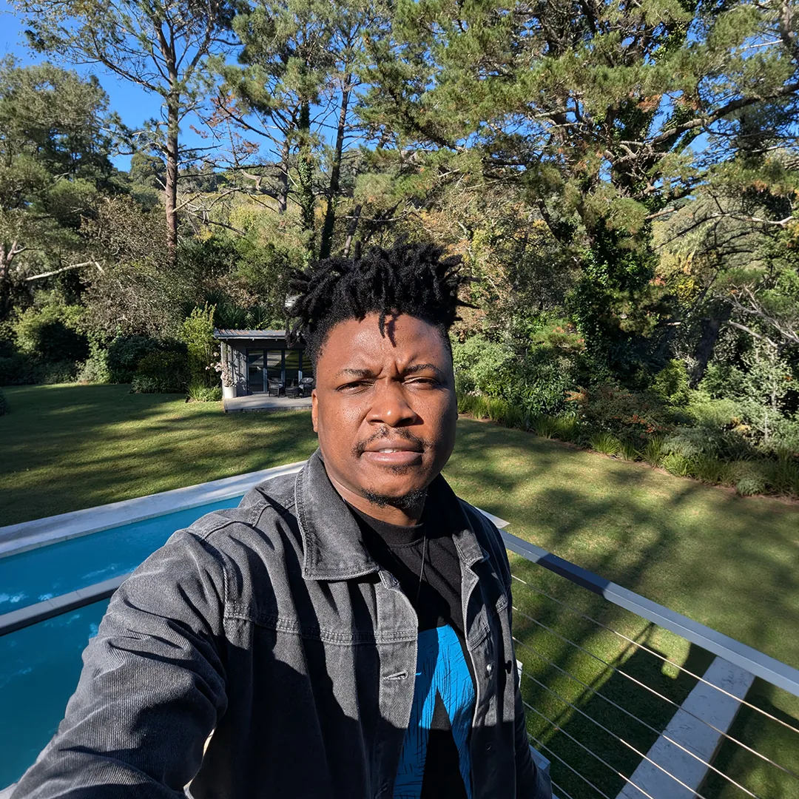

Presence
I want each image to feel direct, human and memorable. Presence begins when a subject feels seen rather than staged, allowing the viewer to recognise an honest emotion and remain connected to it.
About the Artist

Thomas Ogun is an interdisciplinary visual artist whose practice explores identity, spirituality, ancestry and cultural memory through illustration, moving image, sound and augmented reality.
Traditional drawing and digital image-making form the visual foundation of his work. Film, sound and interactive technology extend the narrative beyond the physical image and create new forms of audience engagement.
Through exhibitions, collaborative projects and public-facing digital experiences, he is developing a practice rooted in contemporary African experience and open to international cultural exchange.
I believe creativity has the power to connect people. Through my work, I transform ideas into visual experiences that inspire curiosity, emotion and meaningful conversations.
I aim to contribute to cultural life through exhibitions, curatorial partnerships, cross-cultural collaborations, public workshops and accessible projects that connect visual art with immersive technology.
Artist Statement
My practice explores how identity is shaped by ancestry, memory, spirituality and contemporary African experience. I begin with drawing and digital illustration, creating symbolic images that move between personal reflection and collective history. Moving image, sound and augmented reality extend selected works through time and space.
I use technology as a storytelling material rather than a spectacle. It allows physical artworks to carry movement, voice and responsive layers while remaining at the centre of the encounter. Across exhibitions, film and collaborative projects, I build visual systems that connect traditional image-making with immersive media.
The work asks what we inherit, how cultural memory survives and how art can create meaningful exchange between people. I aim to develop this practice through public presentation, curatorial dialogue and international collaboration.
Creative Philosophy
I want each image to feel direct, human and memorable. Presence begins when a subject feels seen rather than staged, allowing the viewer to recognise an honest emotion and remain connected to it.
Personal experience and cultural history shape how I create and understand images. I use memory as a bridge between what we inherit, what we live now and what future generations may carry forward.
Technology can extend an artwork beyond a static image through movement, sound and responsive experience. I use it to invite participation, deepen emotional connection and allow audiences to encounter the work in their own way.
Consciousness extends beyond a single lifetime, moving through different realities and networks of energy that connect us to the universe. I believe every story should remain authentic to its source of creation and honour the presence of our ancestors.
Practice in Numbers
Cinematography and visual direction.
Visual art and portrait projects.
AR experiments with Unity and Vuforia.
One studio practice across art, film and technology.
Thomas Ogun